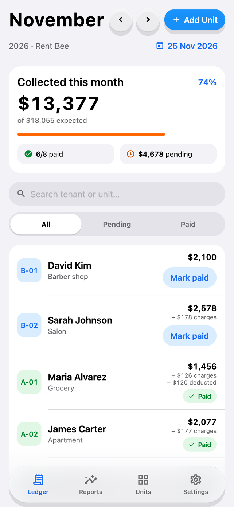
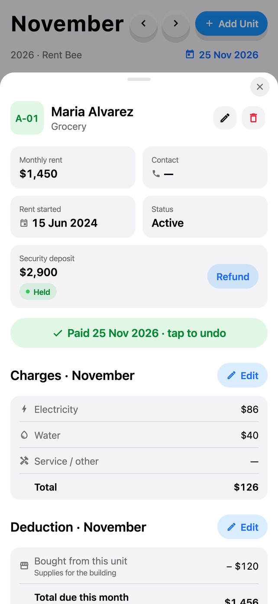
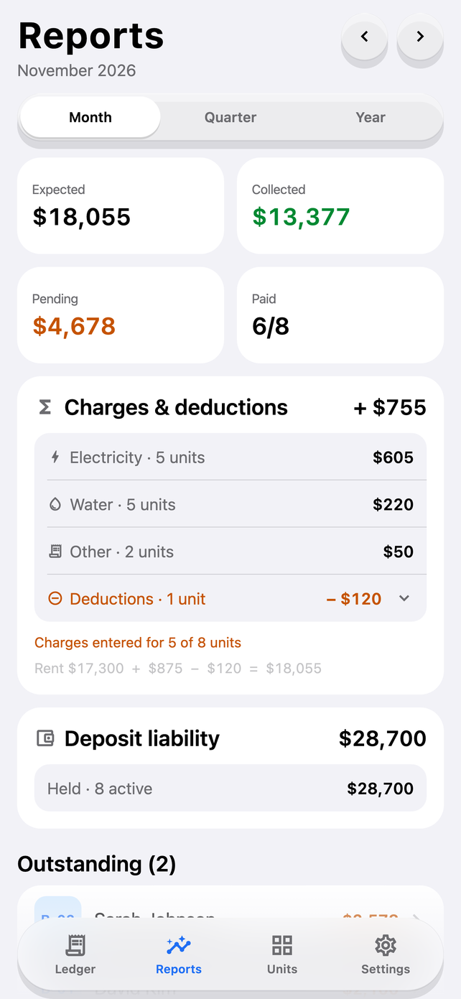
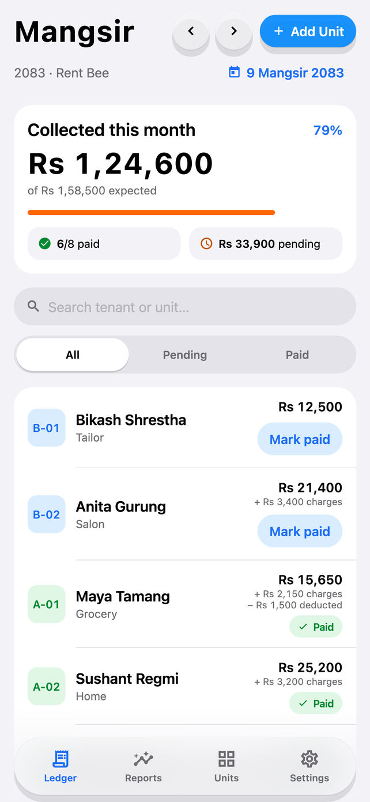

Rent Bee: the simple rent ledger for small landlords
Rent Bee is a free app that tracks monthly rent, utility bills, security deposits and who still owes you, for every apartment, shop and room you rent out. No spreadsheets and no accounting terms.



What Rent Bee does
Mark rent paid in one tap
See who has paid and who is pending for the month. Record full or partial payments by cash, bank transfer or mobile wallet.
Automatic yearly rent increase
Set a percentage once and each unit's rent goes up on its anniversary. Past months keep the rent that applied then.
Utility bills
Add each unit's electricity, water and other charges every month. The month's due is rent plus charges, minus any deduction.
Deductions
Took goods or services from a tenant's shop? Record it against the rent, with a note of what it was for.
Security deposits
Track the deposit held for each unit, refund it when a tenant leaves, and see your total deposit liability.
Reports
Monthly, quarterly and yearly totals: expected, collected and pending, with tenants ranked by what they owe. Export as CSV.
SMS reminders
Open a ready-written rent reminder or thank-you message in your phone's Messages app.
Private and backed up
A PIN locks the app. Your ledger works offline and backs up to your own cloud account when you are online.
Rent Bee at a glance
| Made for | Small landlords renting out apartments, rooms, shops and other units |
|---|---|
| Price | Free |
| Platforms | iPhone, iPad and Android |
| Calendar | Gregorian (AD) or Bikram Sambat (BS) |
| Currency | US Dollars or Nepali Rupees (Rs), in whole amounts |
| Online rent payments | No. Rent Bee records payments you receive; it does not collect them |
| Works offline | Yes, after sign-in |
| Sign-in | Google or Apple, then a PIN. Nepali (+977) mobile numbers can also sign in by SMS |
| Language | English |
| Made by | BrandBuilder Pvt Ltd, Nepal |
Built for Nepal too

Most rent apps assume US Dollars and the Gregorian calendar. Rent Bee also works in Nepali Rupees and by Bikram Sambat (BS) months, so a landlord (gharbeti) in Nepal can track rent (bhada) for shutters, shops, rooms and flats the way it is actually collected.
Months, reports and rent anniversaries all follow the BS calendar, and you can switch between BS and AD dates at any time in Settings.
Common questions
Is there a rent tracker app that supports the Bikram Sambat (Nepali) calendar?
Yes. Rent Bee tracks rent by Bikram Sambat months. Dates, monthly reports and rent anniversaries all follow the BS calendar, and you can switch to Gregorian (AD) dates in Settings.
Does Rent Bee work in US Dollars and Nepali Rupees?
Yes. Rent Bee works in US Dollars or Nepali Rupees (Rs). It starts in Nepali Rupees in Nepal and in US Dollars everywhere else, and you can switch in Settings.
Is Rent Bee free?
Yes. Rent Bee is free to download and use on iPhone, iPad and Android.
Does Rent Bee work without internet?
Yes. After you sign in, your ledger is stored on your phone and works with no connection. When you are online it backs up to your private cloud account automatically.
Can Rent Bee track electricity and water bills, not just rent?
Yes. You can add electricity, water and other charges for each unit every month, and record deductions for goods or services taken from a tenant's shop. Each month's due is rent plus charges minus deductions.
Can Rent Bee track security deposits?
Yes. Rent Bee records each unit's security deposit, marks it refunded when the tenant leaves, and reports how much deposit money you are holding.
How do I sign in to Rent Bee?
You sign in with your Google account or with Apple, then set a PIN that locks the app. People who share one Google account see the same ledger. In Nepal you can also sign in with a +977 mobile number.
Who is Rent Bee for?
Rent Bee is for small landlords who rent out apartments, rooms, shops or other units and collect rent every month, from one unit to a whole building. It is available worldwide, including the United States, and it is also built for landlords (gharbeti) in Nepal collecting rent (bhada) by the Bikram Sambat calendar.
Support
Questions, problems or a request to delete your account: email mail@brandbuilder.com.np. Please include the email address or phone number you signed in with.